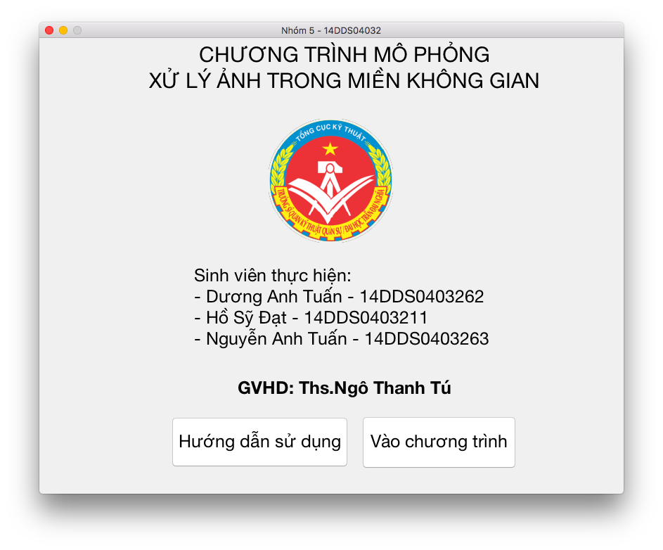
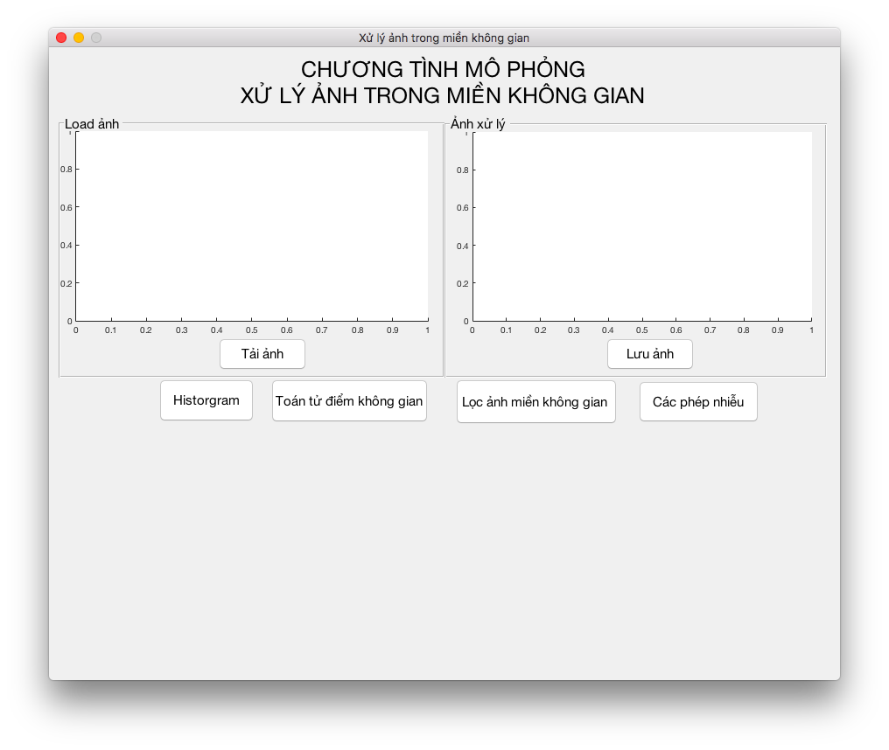

Chương trình XỬ LÝ ẢNH TRONG MIỀN KHÔNG GIAN

Báo cáo Bài tập lớn môn Xử lý ảnh
GVHD: Ths. Ngô Thanh Tú
Sinh viên thực hiện:
- Dương Anh Tuấn - 14DDS0403262
- Hồ Sỹ Đạt - 14DDS0403211
- Nguyễn Anh Tuấn - 14DDS0403263
Yêu cầu phần mềm:
Matlab
Chẳng cần cài đặt gì. Mở Matlab lên và Run thôi :v

Các thành phần trong giao diện:
- 2 khung Axes hiển thị ảnh góc và ảnh xử lý.
- Button Tải ảnh để upload ảnh lên.
- Button Lưu ảnh để lưu ảnh đã xử lý về thư mục.
- Các button chức năng:
- Button Histogram: xử lý Histogram cho ảnh.
- Button Toán tử điểm không gian: xử lý các phép biến đổi xám cơ bản.
- Button Lọc ảnh trong miền không gian: lọc tuyến tính và lọc phi tuyến tính.
- Button Các phép nhiễu: xử lý nhiễu cho ảnh.
Để sử dụng các chức năng trên, trước hết phải upload ảnh. Nếu không, sẽ có thông báo lỗi!
Chọn Mức xám muốn cân bằng.
Click button Cân bằng Histogram để cân bằng ảnh xám.
Click button Biểu đồ Histogram ảnh góc để xem Histogram của ảnh góc.
Phép biến đổi Log
Phép biến đổi Log có công thức: c * log(1 + g3)
g3 là mức ảnh xám ban đầu.
Thay đổi giá trị c để xử lý, bằng cách kéo thanh slider.
Lưu ý: c > 1
Phép biến đổi Luỹ thừa
Phép biến đổi Luỹ thừa có công thức: c * g3^gama
g3 là mức ảnh xám ban đầu.
Thay đổi giá trị c để xử lý, bằng cách kéo thanh slider.
Độ tương phản
Ảnh âm bản
Xử dụng hàm: imcomplement(hinhanh)
Lọc phi tuyến tính
Có 2 bộ lọc: Lọc trung vị và Lọc hạng (Rank)
Lọc tuyến tính
Có các bộ lọc:
- Averge
- Gaussian
- Laplacian
- Log
- Prewitt
- Sobel
- Unsharp
Tuỳ chọn Padding:
- Replicate
- Symmetric
- Circula
Các bộ lọc nhiễu:
- Gaussian
- Localvar
- Possion
- Salt & Pepper
- Speckle